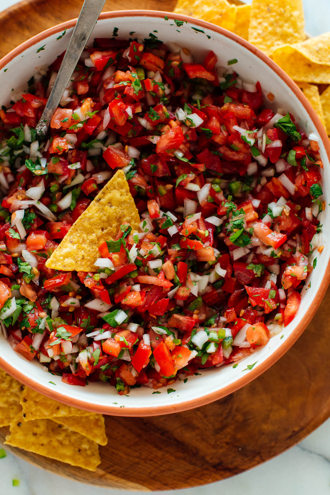

Pico de gallo

Description
I don't have much to say about this but it is lovely and fresh and has onions in it which by now I'm sure you've noticed I'm a fan of.
Ingredients
- White onion, finely chopped. Or use a red one. It's probably not very authentic, but it's still delicious.
- Jalapenos, also finely chopped - you might want to take out the seeds and the weird white bits on the inside first.
- Lime juice, fresh - I guess start with one lime and if it doesn't look like enough do more?
- Salt, I googled it and the internet says start with 3/4tsp and then more to taste, so do that I guess.
- Lots of tomatoes, chopped fairly small but not as small as the onions.
- Lots of coriander, also chopped.
Steps
- Put the onion, jalapeno, lime juice and salt into a bowl, mix it together and let it sit for a bit. 5 mins is probably long enough, I dunno.
- Add the tomatoes and coriander, and mix again.
- Give it a taste, and add more salt if you think it needs it.
- Apparently it's better if you let it "marinate" for a bit, but I'm impatient and don't like waiting. You can do what you want, I'm not the salsa police.